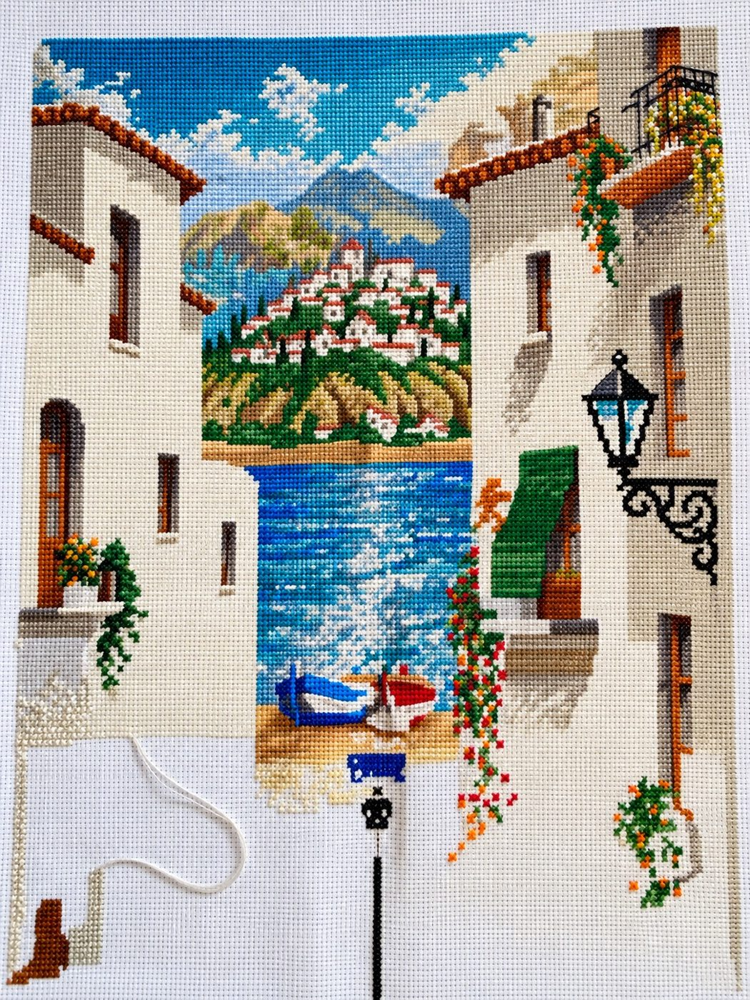
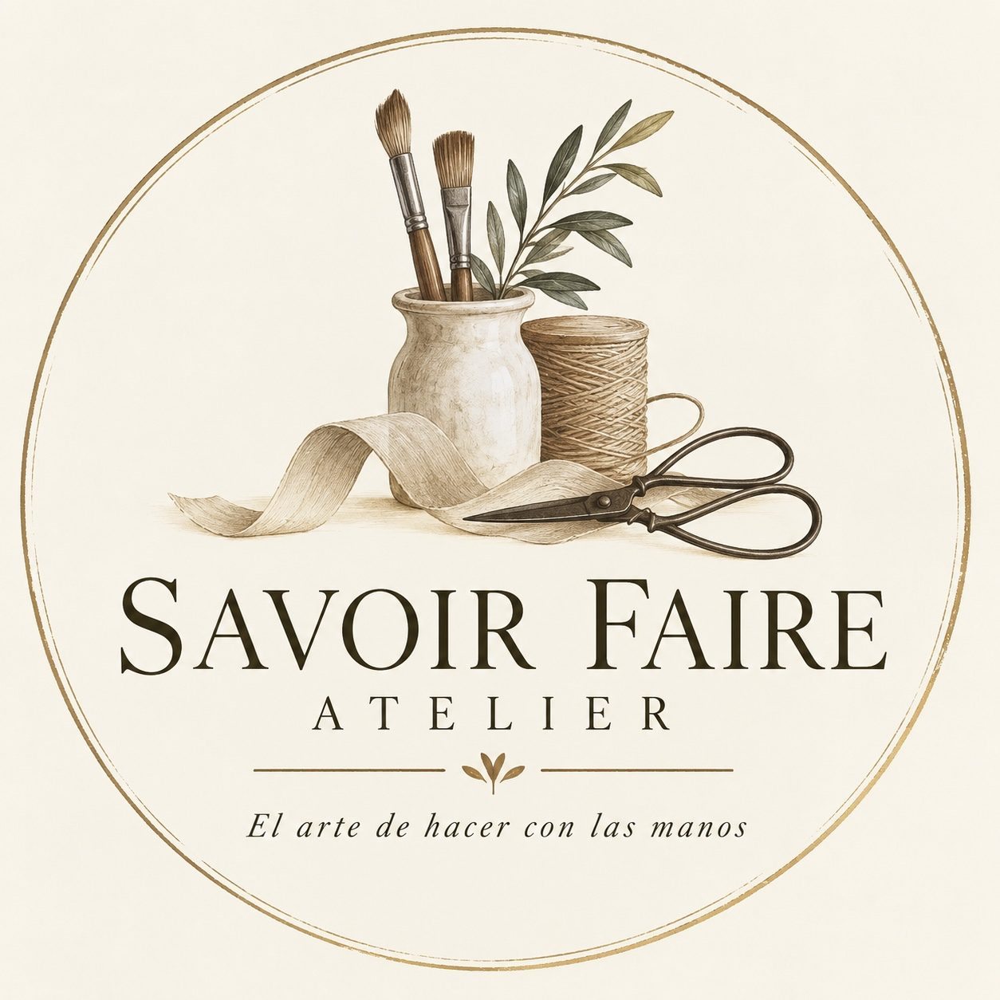
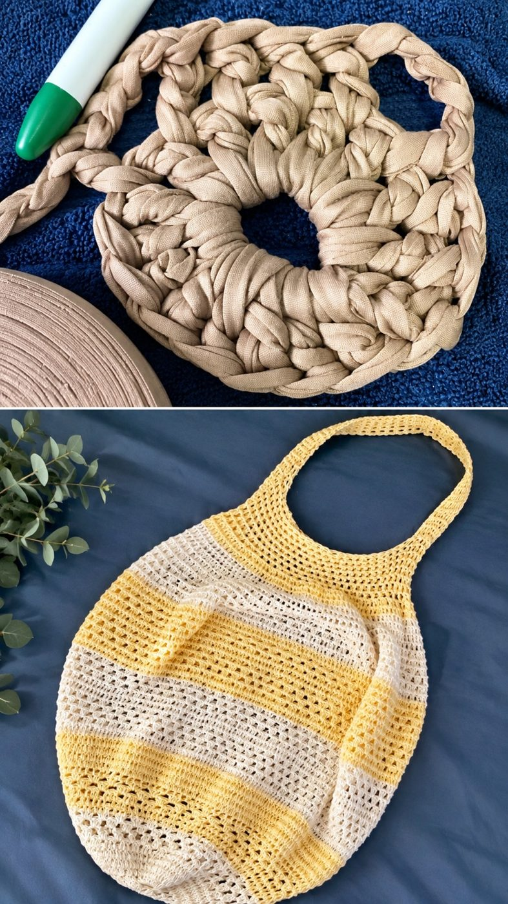
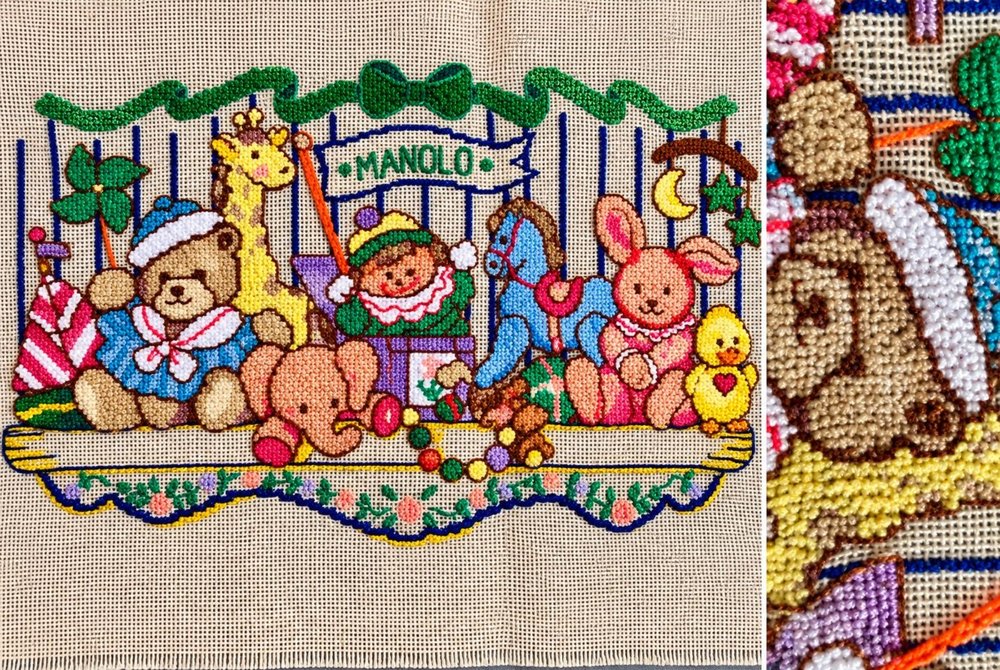
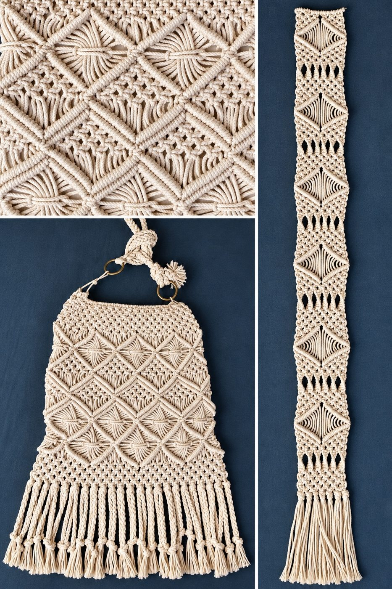

Bordado
Paisajes que se construyen puntada a puntada
Color, paciencia y detalle transformados en una escena llena de profundidad.
Punto de cruz
Tradición, creatividad y dedicación en cada pieza.

Paisajes que se construyen puntada a puntada
Color, paciencia y detalle transformados en una escena llena de profundidad.
Punto de cruz
Piezas útiles con carácter artesanal
Texturas suaves y formas contemporáneas hechas a mano.
Crochet · Trapillo
Relieve y color para recordar
Cada relieve aporta personalidad, memoria y un toque entrañable. Ideal para regalos personalizados con nombre.
Personalizado
El diseño nace del nudo
Geometría, ritmo y fibras naturales en piezas decorativas y funcionales.
Fibras naturalesTodo se hace sobre pedido, a tu medida.
Cuéntanos por WhatsApp qué te gustaría: bordado, tejido o macramé.
Elegimos colores, tamaño, nombre o detalles para que sea única.
Tu pieza se hace a mano, con calma y cuidado, hasta que llega a ti.
La forma más rápida es WhatsApp.